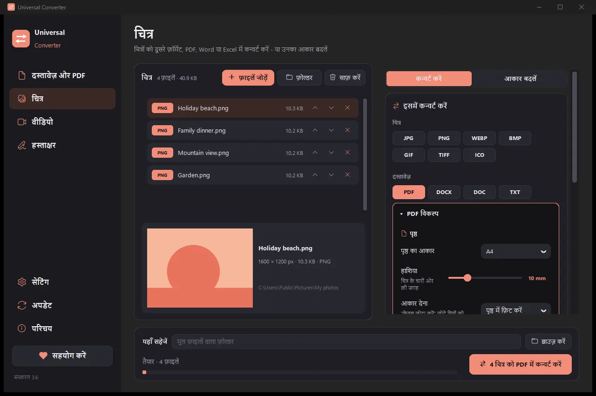

फ़ोटो या हस्ताक्षर को 20 KB, 50 KB या सटीक पिक्सेल में बदलें
ऑनलाइन आवेदन और परीक्षा फ़ॉर्म अक्सर सटीक माप वाली फ़ोटो या हस्ताक्षर माँगते हैं, जैसे 200 × 230 पिक्सेल, और फ़ाइल 20 KB या 50 KB से छोटी। Universal Converter दोनों एक साथ सेट करता है और उस आकार में तस्वीर को जितना हो सके उतना साफ़ रखता है। आपकी फ़ोटो कभी आपके डिवाइस से बाहर नहीं जातीं।
इंस्टॉल और अपडेट कैसे करें
- डाउनलोड की गई .dmg खोलें और Universal Converter को Applications में खींचें।
- ऐप खोलें। पहली बार macOS उसे रोकता है क्योंकि उस पर Apple का हस्ताक्षर नहीं है: “हो गया” पर क्लिक करें।
- सिस्टम सेटिंग्स > गोपनीयता और सुरक्षा खोलें, नीचे स्क्रॉल करें, “फिर भी खोलें” पर क्लिक करें और अपना पासवर्ड दर्ज करें। यह सिर्फ़ एक बार करना होता है।
अपडेट: अगर ऐप पहली बार खुलने पर आप अनुमति दें, तो यह हर बार शुरू होने पर नए संस्करण जाँचता है, उनके डिजिटल हस्ताक्षर सत्यापित करता है और आपके चुनने पर उन्हें इंस्टॉल करता है।
इंस्टॉल और अपडेट कैसे करें
- अपने फ़ोन पर “Android के लिए डाउनलोड करें” पर टैप करें।
- डाउनलोड की गई फ़ाइल खोलें। अगर Android पूछे, तो अपने ब्राउज़र या फ़ाइल मैनेजर को ऐप इंस्टॉल करने की अनुमति दें।
- इंस्टॉल करें पर टैप करें।
अपडेट: ऐप लगभग रोज़ एक बार जाँचता है और नया संस्करण तैयार होने पर आपको बताता है। उसे इसी तरह डाउनलोड करें और पुराने के ऊपर इंस्टॉल करें; आपकी सेटिंग बनी रहती हैं।
इंस्टॉल और अपडेट कैसे करें
- .AppImage फ़ाइल डाउनलोड करें।
- उसे चलने योग्य बनाएँ: राइट-क्लिक करें, Properties > Permissions खोलें और प्रोग्राम की तरह चलाने की अनुमति दें (या टर्मिनल में: chmod +x Universal-Converter-*.AppImage)।
- उस पर डबल-क्लिक करें। कुछ इंस्टॉल नहीं होता: ऐप यही एक फ़ाइल है।
अपडेट: अगर आप पहली बार खुलने पर अनुमति देते हैं, तो ऐप हर बार शुरू होने पर नए संस्करण देखता है, उनके डिजिटल हस्ताक्षर की जाँच करता है और AppImage फ़ाइल को उसी जगह बदल देता है।
यह कैसे करें
- Universal Converter खोलें और बाईं ओर चित्र चुनें।
- अपनी फ़ाइलें या पूरा फ़ोल्डर विंडो में खींचें, या फ़ाइलें जोड़ें पर क्लिक करें।
- ऊपर आकार बदलें पर जाएँ, दोनों चुनें, फिर फ़ॉर्म में माँगी गई चौड़ाई और ऊँचाई और सबसे बड़ा फ़ाइल आकार दर्ज करें, जैसे 20 KB।
- कन्वर्ट करें पर क्लिक करें। नई फ़ाइलें मूल फ़ाइलों के बगल में, या आपके चुने फ़ोल्डर में सहेजी जाती हैं।

ऑफ़लाइन क्यों?
Universal Converter सारा काम आपके अपने डिवाइस पर करता है। आपकी फ़ाइलें निजी रहती हैं, बड़ी फ़ाइलें कोई समस्या नहीं, और यह इंटरनेट कनेक्शन के बिना भी काम करता है।
यह और क्या कर सकता है
- PDF को Word में कन्वर्ट करें
- Word दस्तावेज़ों को PDF में कन्वर्ट करें
- कई फ़ाइलों को एक PDF में जोड़ें
- PDF को अपने चुने आकार तक कंप्रेस करें
- PDF को 100 KB, 200 KB या ऑनलाइन फ़ॉर्म के मांगे गए किसी भी आकार में कंप्रेस करें
- PDF पृष्ठों को JPG चित्रों में कन्वर्ट करें
- स्कैन किए दस्तावेज़ को संपादन योग्य Word फ़ाइल में बदलें
- चित्रों को JPG, PNG, WEBP और अन्य के बीच कन्वर्ट करें
- चित्रों का आकार बदलें या उन्हें किसी फ़ाइल आकार तक छोटा करें
- फ़ोटो को एक PDF में जोड़ें
- JPG से PDF, 100 KB से कम
- चित्र से टेक्स्ट कॉपी करें (OCR)
- वीडियो को बिना अपलोड किए कंप्रेस करें
- वीडियो को MP4, MKV, WebM, MOV और AVI के बीच कन्वर्ट करें
- वीडियो की आवाज़ को MP3 के रूप में सहेजें
- वीडियो से GIF बनाएँ
- PDF से तालिकाएँ Excel में निकालें
- बैंक स्टेटमेंट PDF को Excel में कन्वर्ट करें
- PDF चालानों से तालिकाएँ Excel में निकालें
- PDF पर हस्ताक्षर करें
- PDF फ़ॉर्म भरें